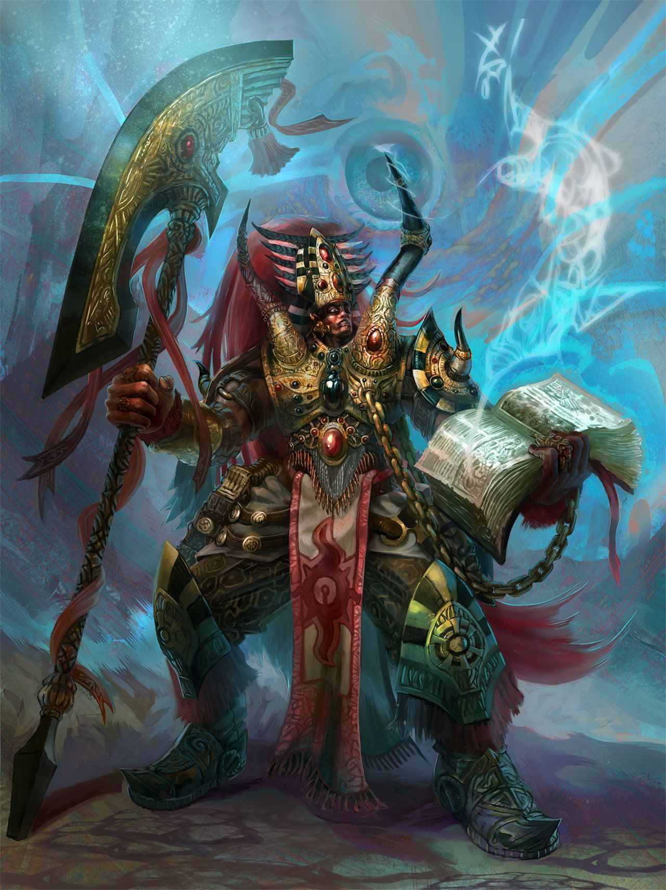

Basic information
The Thousand Sons are one of the Traitor Legions of Chaos Space Marines who are sworn solely to the service of Tzeentch

phykers
The main feature that distinguishes the Thousand Sons from the other Traitor Legions is the sheer number of psyker mutations that have always existed amongst the Space Marines in this Legion.